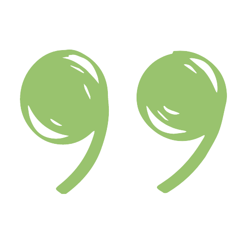

Espace particuliers
ATELIER D’AUTO-HYPNOSE ADULTES
Cet atelier a pour objectif de vous amener de manière intégrative à l’autonomie dans la pratique de l’Auto-hypnose à titre personnel.
L'auto-hypnose permet d'activer vos ressources personnelles, et ainsi votre plein potentiel.
ATELIER DEVELOPPEMENT PERSONNEL
Cet atelier faite suite à la formation d’auto-hypnose.
Différentes thématiques sont abordées comme l'apprivoisement des émotions, être en accord avec ses valeurs, la gestion du stress... Des outils spécifiques sont intègrés pour répondre aux besoins spécifiques (EFT, Auto-hypnose, respiration...)
ATELIER D’AUTO-HYPNOSE ADOS
Ces ateliers abordent des thématiques générales (stress, confiance en soi, angoisse, émotions, douleur, besoin de concentration, mémorisation, sommeil) et non des difficultés précises tels que les TOC, trauma, deuil qui nécessite des séances individuelles (l’auto-hypnose peut venir en complément).
ATELIERS ENFANTS / ADOS
Ces ateliers ont pour objectif de développer la Confiance en Soi tout en apprenant à apprivoiser les émotions.
Des ateliers qui se déroulent dans le plaisir, la bienveillance en respectant l'identité de chacun pour évoluer en collectivité.
ATELIER DU MIEUX-ÊTRE
au centre de Radiothérapie Maurice Tubiana, Clinique du Parc, à Caen
Ces ateliers sont destinés aux patients suivis au Centre Tubiana, qui sont en cours de traitement - chimio ou radiothérapie - ou en cours de surveillance.
Si vous êtes intéressé, Contactez-moi au 06.86.68.26.06 ou par email pour connaître les dates des prochains ateliers ou pour plus d'informations.
Bien souvent les groupes sont créés suite à la demande !
Avec plaisir...
Atelier d’auto-hypnose adultes
Groupe de 4 à 8 personnes
3 modules de 2h chacun
90 euros les 3 modules
Alternance théorie & pratique
Support écrit & audio
Bonne humeur au rdv ...
être bien tout simplement...
L'auto-hypnose est une recherche interne vers une richesse intérieure, elle permet d'accéder par soi-même à un état de rêve éveillé permettant d'implanter des suggestions positives dans notre inconscient pour déclencher un processus de changement de pensées, croyances, comportements dans la direction de l'objectif... Des connaissances théoriques sur l'hypnose, l'auto-hypnose, et diverses pratiques seront vécues pour assimiler la technique, tout cela de façon simple et ludique. Des supports écrits et audio seront transmis. Vous apprendrez l'auto-hypnose afin d'être autonome dans votre pratique chez vous, pour ensuite être bien tout simplement au quotidien...
Ce que je peux attendre de l’Auto-hypnose:
- Être plus autonome
- Vivre le changement sereinement
- Développer la confiance en moi
- Améliorer mes relations avec les autres
- Changer un comportement problématique (alimentation, agressivité, soumission, tabac...)
- Avoir une meilleure estime de moi
- Prendre soin de mes besoins
- Résoudre des problèmes
- Surmonter des difficultés de ma vie
- Améliorer mon quotidien
- Améliorer mon sommeil et mes capacités de récupération
- Améliorer ma santé physique
- Améliorer ma mémoire et mes capacités d’apprentissage
- Mieux faire face à mes émotions
- Me préparer à des événements de vie particuliers (concours, opérations, etc.)
- Découvrir de nouvelles compétences inattendues
En option, à la fin de l’atelier est proposé 10 modules mensuels de 2h. dans une démarche évolutive et dynamique pour avancer sur son chemin progressivement à son rythme et à sa manière.
La continuité des ateliers permet un accompagnement abordant différentes thématiques plus spécifiquement : confiance en soi, apprivoisement des émotions, affirmation de soi, pensées, sommeil, détermination d'objectifs, assertivité gestion du stress...
Les thématiques sont définis suivant les besoins et l'évolution du groupe.
Atelier de développement personnel
Groupe de 4 à 8 personnes
10 modules de 2h chacun
repartis sur l’année
30 euros par modules
certains mercredis
Des techniques simples et efficaces adaptés aux différentes thématiques abordées vous seront transmises pour être autonome dans le quotidien et être de plus en plus en paix. Vous apprendrez l'EFT dans l'estime de soi et l'apprivoisement des émotions, des techniques respiratoires dans la gestion du stress et l'assertivité... et bien d'autres choses pour permettre à chacun de se connaître davantage et répondre à ses propres besoins.
exemple d'ateliers proposés...
- Rappels et approfondissement de l’auto-hypnose
- Confiance et estime de soi
- Qualités et valeurs. Qu’est-ce qu’on en fait?
- Identifier et apprivoiser mes émotions
- Accueillir mes émotions de manière adaptée
- Communication non violente : Émotions et besoins
- Gestion du stress : Émotions, pensées et sensations corporelles
- Croyances et injonctions limitantes : Quelles autorisations me donner?
- Assertivité et Accords Toltèques
- Congruence, être pleinement soi-même
EN VOUS INSCRIVANT A L’ATELIER, VOUS VOUS
ENGAGEZ A PARTICIPER AU 10 MODULES
Atelier d’auto-hypnose ados
Groupe de 4 à 6 ados
5 modules de 1h chacun
100 euros les 5 modules
puis module complémentaire
mensuel à 20 euros possible
Alternance théorie & pratique
Support écrit & audio
Bonne humeur au rdv ...
être bien tout simplement...
Les ateliers se déroulent avec bienveillance et écoute tout en expérimentant de manière intégrative l'auto-hypnose.
L’adolescence, une période de la Vie pas toujours évidente… durant laquelle, parents et ados peuvent se sentir démunis.
En effet, l’adolescence s’inscrit dans un mouvement de rupture par rapport à l’enfance, c’est une période de transition, elle est définie à la fois comme une période de vulnérabilité et de transformation, de chamboulements, de crises…
Et si vous pouviez offrir à votre adolescent, un outil naturel et personnel pour vivre le plus sereinement possible cette période ?
En apprenant l’auto-hypnose, votre adolescent peut se recentrer et accéder à ses propres ressources intérieures, pour limiter ou lever les blocages, tout en traversant chaque étape le plus facilement possible…
Il est vrai que l’adolescence est une phase de multiples changements (physiques, psychologiques, émotionnelles, scolaires, sexuels…) mais c’est aussi une phase de découverte d’indépendance, de construction de l’identité, de la personnalité.
Au cours des ateliers, ce sont donc différents thèmes qui seront abordés comme la gestion des comportements, des pensées, des émotions, des besoins et la confiance en soi.
Que peut apporter l’Auto-hypnose ?
L’auto-hypnose établit une connexion avec l’inconscient en accédant à la visualisation pour se préparer aux changements de la Vie. Les ados auront les outils pour répondre à leurs besoins physiques, psychologiques, mentaux et spirituels.
L’auto-hypnose permet de communiquer avec l’inconscient, qui est un réservoir de savoir, de savoir-faire et de savoir-être, d’apprentissages, de créativité et d’idées nouvelles, puissant acteur d’équilibre et de comportements sains et écologiques.
C’est cette partie avec laquelle nous apprenons à coopérer grâce à l’auto-hypnose.
L’auto-hypnose est un moment d’évasion créé pour accéder à nos ressources, au plus profond de soi, au niveau de l’inconscient, où se cache le sens de nos émotions, certains besoins mais aussi beaucoup de richesse…
L’état hypnotique est un état naturel, un état entre la veille et le sommeil, un moment d’évasion, c'est-à-dire que nous sommes tellement absorbés dans nos pensées que nous en oublions presque l’endroit où nous sommes, cet état d’hypnose (où le conscient est en retrait) qui est créé intentionnellement pour une séance, permet d’accéder au réservoir des ressources intérieures dans l’inconscient.
Destinés aux ados à partir de la 6ème, les groupes sont constitués en fonction des âges. vous pouvez constituer vous-même votre groupe avec vos copains ou copines.
Dates et horaires déterminées ensemble, après prise de contact.
En option, à la fin de l’atelier est proposé 10 modules mensuels d’1h. pour accompagner dans un cadre bienveillant et sécurisant l’ado dans sa démarche évolutive pour avancer sur son chemin progressivement à son rythme et à sa manière.
La continuité des ateliers permet un accompagnement de questions existentielles dans les différents domaines de Vie (école, sport, relations sociales, amicales ou familiales…) : « Qui suis-je ? Comment m’affirmer en respectant les autres ? Comment me protéger ? Quel est mon projet d’avenir ? Quelles sont mes valeurs, mes croyances ? Suis-je capable ?... »
Atelier enfants / ados
Groupe de 4 à 6 enfants/ados à partir de 6 ans
6 modules de 1h chacun
120 euros les 6 modules
- 6-8 ans
- 8-10 ans
- Adolescents
LES DIFFERENTS MODULES :
1. Identifier et gérer mes émotions
2. Mes 5 sens pour savoir qui je suis
3. Mon cerveau : mode d’emploi
4. Agir sur mes émotions en identifiant mes besoins
5. Prendre Confiance en moi
6. Synthèse et échange avec les parents
Un livret sera donné aux enfants/ados au fur et à mesure des modules.
Malheureusement, culturellement en tant qu’adulte nous avons tendance à ne pas écouter nos émotions. Depuis très longtemps dans l’Histoire, nous nous sommes petit à petit déconnectés de nos sensations corporelles et de nos ressentis émotionnels. Aujourd’hui, de plus en plus d’études nous montrent que les émotions sont utiles. Chaque émotion a une fonction définie, c’est un message envoyé par notre corps pour nous mobiliser, par conséquent, il est bienvenu de prendre ses émotions en compte pour écouter ses besoins pour adapter ses comportements et ses actions. Elles peuvent être agréables et désagréables à ressentir.
En tant que professionnelle et parent, je pense qu’il est primordial que la génération de nos enfants puissent avoir les clés pour comprendre comment apprivoiser ses émotions.
Pour cela, je vous propose des ateliers pour les enfants et les adolescents. L'interactivité et le jeu sont les éléments primordiaux de la transmission d'apprentissage, chaque enfant évolue à son rythme et à sa manière.
Pour chaque atelier nous aurons :
- une partie explicative ludique pour comprendre comment fonctionne les émotions suivant le thème du module
- des outils piochés dans différentes méthodes pour que chacun trouve ce qui lui correspond
Lors du dernier module, un échange avec les parents est prévu pour vous transmettre des clés qui synthétiseront les différents modules réalisés avec vos enfants/ados, cela dans le but de gérer de manière autonome le quotidien.
En tant que parents, nous sommes souvent perdus face aux réactions de nos enfants qui nous semblent souvent démesurées. Nous avons parfois tendance à leur demander des choses qu’ils ne sont pas encore capables de faire car leur développement psycho-affectif et cérébral ne leur permet pas de l’appliquer. Lors de ce dernier module, je vous expliquerai succinctement suivant l’âge de votre enfant/ado ce qui peut être mis en place.
Ainsi, ces ateliers permettront, d'une part, à vous parents, d'adopter une parentalité constructive et plus agréable, et d'autre part permettront à vos enfants de développer leurs ressources en exploitant leurs émotions et ainsi de grandir plus sereinement avec confiance.
dans le bon sens... 
Atelier du mieux-être
Groupe de 4 à 8 personnes
5 modules de 2h chacun
Financé par le centre Tubiana
Alternance théorie & pratique
Support écrit & audio
chaque mardi au RDC du Centre Maurice Tubiana.
5 MODULES POUR :
- Explorer les différents principes et aspects de notre fonctionnement : corps/esprit, conscient/inconscient
- Obtenir des clés, des astuces pour révéler votre plein potentiel, dans une démarche intégrative
- Les thèmes abordés sont évolutifs, tout en étant adaptés aux feedbacks, besoins et demandes du groupe.
Les ateliers permettent de cibler et de répondre aux besoins personnels de chacun, permettant une prise en charge globale de la personne ; tout en profitant de la dynamique de groupe, la parole peut se libérer également en toute bienveillance et dans la bonne ambiance.
L'apprentissage de différents outils : respiration, autohypnose, visualisation, méditation ; permet d’acquérir autonomie dans le quotidien que ce soit au niveau de la gestion du stress, des émotions, des pensées, de l’acceptation de la maladie, la gestion des douleurs, du sommeil…
Ces ateliers permettent d’envisager, de construire son avenir plus sereinement et avec confiance.
Durant les ateliers, l’échange du groupe permet de répondre à la fois aux attentes individuelles et personnelles des patients. Chaque groupe débute un atelier ensemble, favorable à une cohésion propice à une ambiance chaleureuse.
Ils sont pris en charge financièrement par le centre Maurice Tubiana et les 3C (Centre de Coordination en Cancérologie); les ateliers sont donc proposés gratuitement aux patients.
A l'issue de la formation des Ateliers Mieux-Etre, des ateliers complémentaires sont proposés ponctuellement, afin de perfectionner l’apprentissage et de maintenir une certaine dynamique (jusqu’à 8 pers.).
Exemple de thématiques proposés : Vivre légère avec l’hormonothérapie, Estime de Soi, Apprivoisement des émotions, Anxiété et Angoisse, Approfondissement de l’Auto-hypnose, Troubles du Sommeil, Déterminer et atteindre ses objectifs, Développer sa créativité…